PrintClick – עמדת מחשב חסומה ועמדת הדפסות לבית המדרש
PrintClick נועלת את הגישה למחשב והופכת אותו לעמדה ציבורית בטוחה: המתפללים נכנסים עם נדרים פלוס או עם משתמש של בית הכנסת, לומדים באוצר החכמה, מדפיסים מוורד או מתוכנות העלונים – והחיוב מתבצע לבד, מדויק לפי כל עמוד שהודפס בפועל. ולמנהל יש שקט.
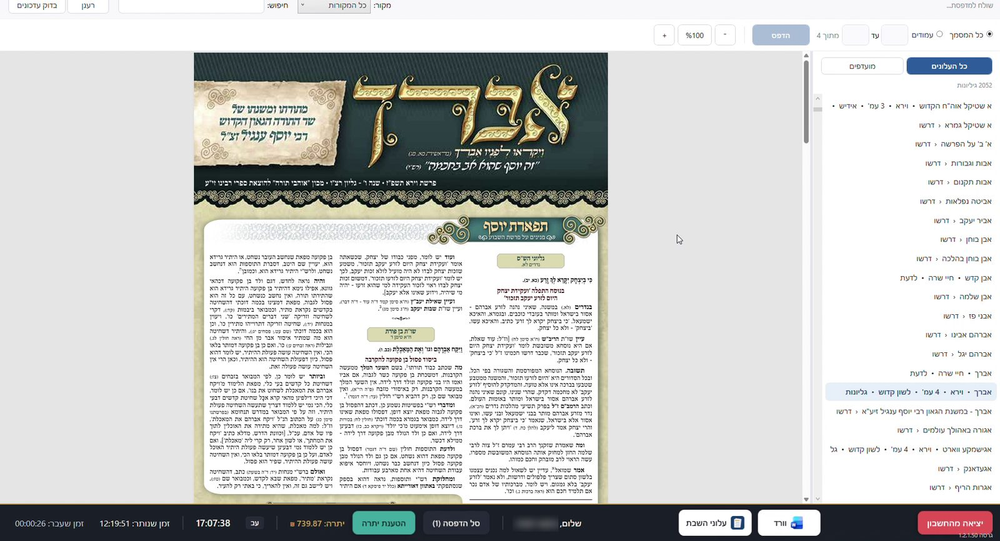
מכירים את זה?
בגלל זה בנינו את PrintClick
עמדת מחשב חסומה – לאוצר החכמה ולתוכנות שאתם מאשרים
מחשב ציבורי בבית המדרש צריך להיות פתוח ללימוד ולהדפסה – וסגור לכל השאר. PrintClick נועלת את הגישה למחשב, כך שהמתפללים יכולים להשתמש רק בתוכנות שמנהל העמדה אישר.
- רק תוכנות מאושרות – אוצר החכמה, וורד, תוכנות עלונים, או כל תוכנה שתגדירו.
- בלי שולחן עבודה וסייר קבצים – אין גישה לקבצים, לתיקיות ולהגדרות של המחשב.
- בלי גלישה באינטרנט – הדפדפנים חסומים.
- מקלדת נעולה – מקש Windows, Alt+Tab, Alt+F4 ומנהל המשימות חסומים.
- בלי חלונות פתיחה ושמירה – גם מתוך התוכנות המאושרות אי אפשר להגיע לקבצים.
- חיוב לפי זמן או לפי הדפסה – לבחירתכם, עם נדרים פלוס או משתמשים מקומיים.
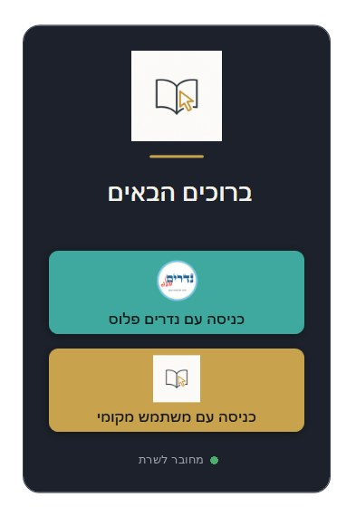
מה PrintClick עושה
כל מה שעמדת מחשב ועמדת הדפסות ציבורית צריכות – במקום אחד
כניסה עם נדרים פלוס
נכנסים עם תעודת זהות וסיסמת האזור האישי, והחיוב יורד מהיתרה בנדרים פלוס. אפשר להטעין יתרה ישירות מהעמדה.
חיוב מדויק לפי כל עמוד
התוכנה מחייבת לפי כל עמוד שהודפס בפועל – חד-צדדי, דו-צדדי, 2 או 4 עמודים בדף וחוברת. אפשר גם חיוב לפי זמן, ופרופילי מחיר שונים.
נעילת גישה למחשב
עמדה חסומה הרמטית: אין גישה לשולחן העבודה, לדפדפנים, למנהל המשימות ולהגדרות. רק התוכנות שהמנהל אישר, וההדפסה עוברת רק דרך העמדה.
סל הדפסות משודרג
אוספים כמה מסמכים, מסדרים את העמודים, מוסיפים עמוד שער מעוצב – ומדפיסים הכל יחד, בתשלום אחד.
מצב שבת וחג
העמדה נסגרת לבד לפי זמני כניסת ויציאת השבת והחג במיקום של בית הכנסת, ונפתחת שוב במוצאי שבת.
עדכונים אוטומטיים
גרסאות חדשות מותקנות לבד בלילה, כשהעמדה פנויה – בלי שהמנהל צריך לעשות משהו.
שקט למנהל
ניתוק אוטומטי למי ששכח לצאת, הגבלת זמן לכל כניסה, שעות פתיחה לפי לוח זמנים והיסטוריית שימוש מלאה.
תמיכה מרחוק
צריכים עזרה? אפשר להתחבר לעמדה מרחוק ולפתור, בלי להגיע פיזית – רק באישור מנהל העמדה.
מעבר קל מסייפר
המשתמשים המקומיים והיתרות מיובאים מסייפר, כך שהמתפללים ממשיכים עם החשבונות שהכירו.
ככה זה נראה בפועל
כניסה עם נדרים פלוס, בחירת עלון, הדפסה, סל הדפסות ועמוד שער – בדקה וחצי
איך זה עובד
נכנסים
עם נדרים פלוס או עם משתמש מקומי של בית הכנסת. אפשר להטעין יתרה כבר במסך הכניסה.
מדפיסים
מכל תוכנה שהמנהל הגדיר – אוצר החכמה, וורד, תוכנות עלונים ועוד. בוחרים צורת הדפסה ומספר עותקים.
משלמים אוטומטית
המחיר מוצג לפני ההדפסה, והחיוב יורד מהיתרה מדויק לפי כל עמוד שהודפס בפועל. בלי קופה ובלי חשבונות.
צילומי מסך
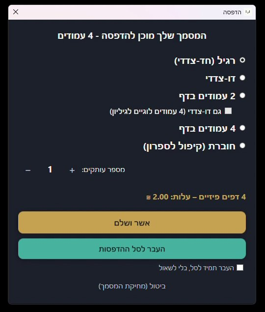
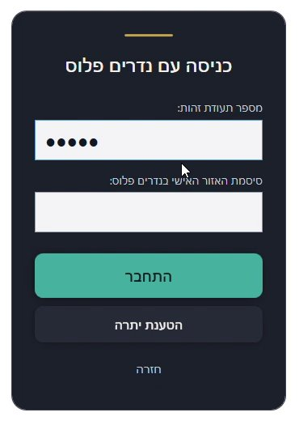
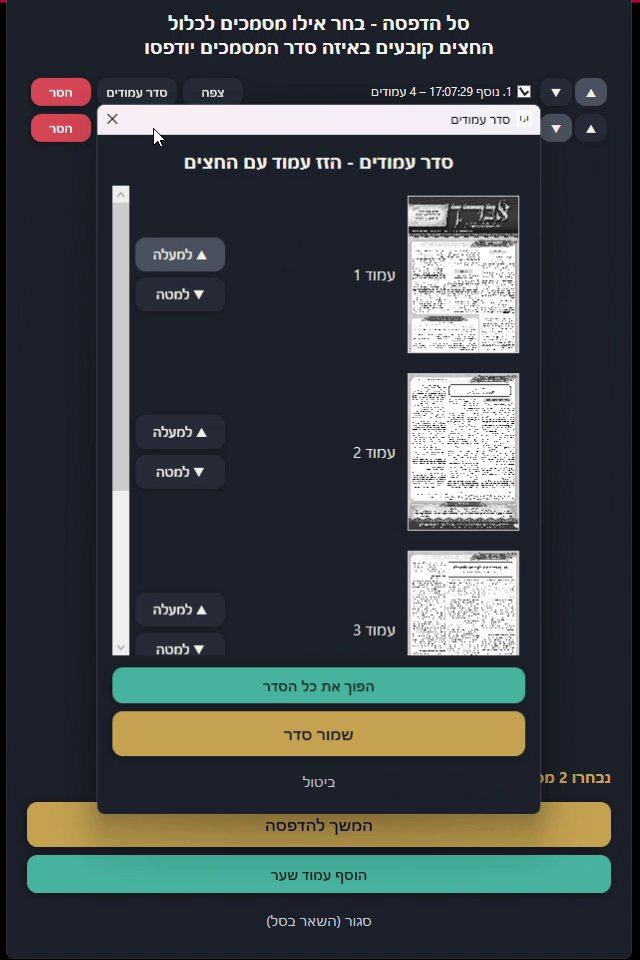
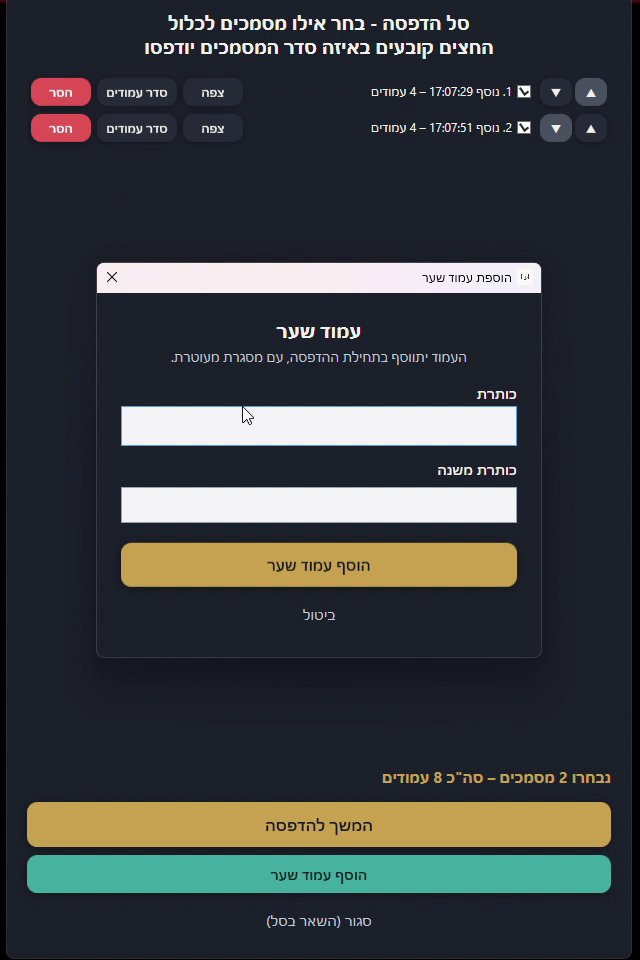
למנהל העמדה
חלון ניהול אחד, בעברית, לכל ההגדרות
- אשף התקנה פשוט – מפתח רישיון, מנהל, מדפסת, וזהו.
- מחירים גמישים – לפי עמוד, דו-צדדי, לפי זמן, ופרופילים שונים למשתמשים שונים.
- הדפסה רק דרך העמדה – הדפסה ישירה למדפסת שעוקפת את החיוב נחסמת.
- היסטוריית שימוש – מי נכנס, מתי, לכמה זמן וכמה הדפיס.
- מודעות במסך הכניסה – הודעות לציבור, תרומות ועדכונים.
- לוח זמנים – העמדה פתוחה רק בשעות שקבעתם.
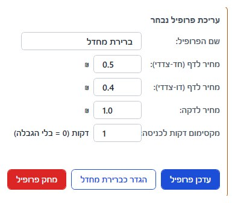
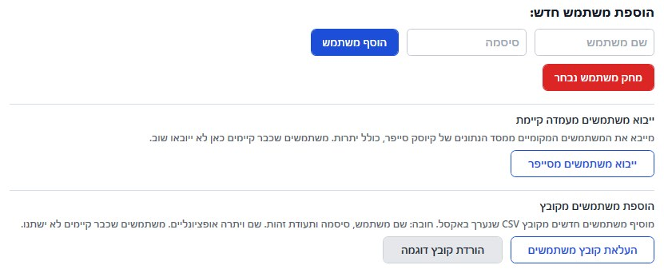
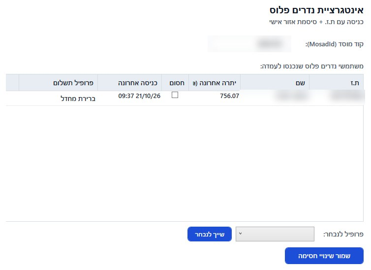
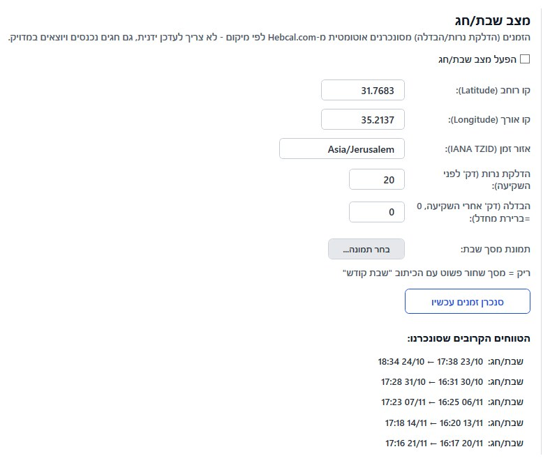
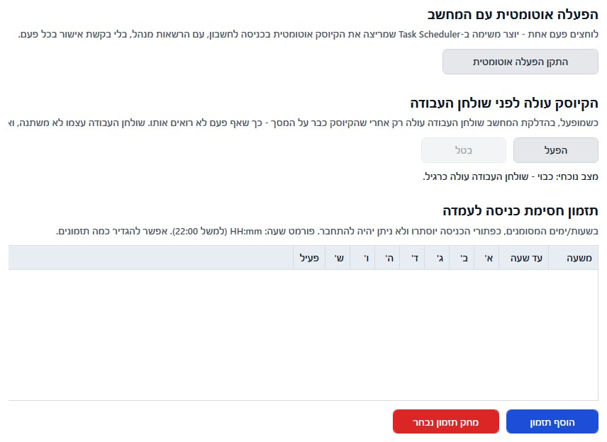
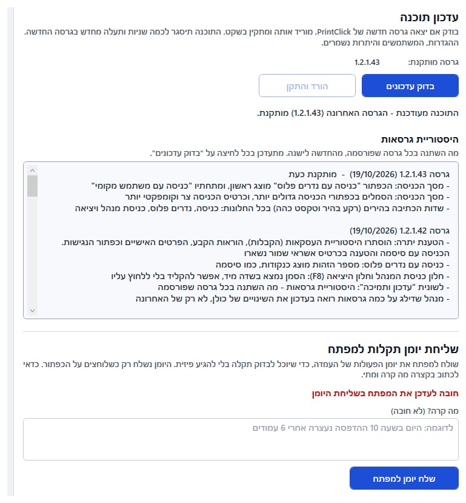
שאלות נפוצות
מה צריך כדי להתקין את PrintClick?
מחשב עם Windows 10 או Windows 11, מדפסת וחיבור לאינטרנט. ההתקנה מגדירה את העמדה בעזרת אשף פשוט.
האם המתפללים יכולים לשלם דרך נדרים פלוס?
כן. נכנסים לעמדה עם תעודת זהות וסיסמת האזור האישי בנדרים פלוס, והחיוב יורד מהיתרה. אפשר גם להטעין יתרה ישירות מהעמדה.
מה קורה בשבת ובחג?
העמדה נסגרת אוטומטית לפי זמני כניסת ויציאת השבת והחג במיקום של בית הכנסת, ונפתחת שוב במוצאי שבת.
האם אפשר לעבור מסייפר?
כן. אפשר לייבא את המשתמשים המקומיים מסייפר, כך שהמתפללים ממשיכים עם החשבונות שלהם.
האם אפשר להשתמש בעמדה לאוצר החכמה?
כן. PrintClick הופכת את המחשב לעמדת מחשב חסומה: המשתמשים פותחים רק את אוצר החכמה ואת התוכנות שהמנהל אישר, ואפשר לחייב לפי זמן שימוש או לפי הדפסות.
איך PrintClick נועלת את הגישה למחשב?
אין גישה לשולחן העבודה, לסייר הקבצים, לדפדפנים, למנהל המשימות ולהגדרות. מקש Windows וקיצורי המקלדת חסומים, וחלונות פתיחה ושמירה של קבצים נסגרים אוטומטית.
האם אפשר לגלוש באינטרנט מהעמדה?
לא. הדפדפנים חסומים, והמשתמשים יכולים לפתוח רק את התוכנות שמנהל העמדה אישר.
מאילו תוכנות אפשר להדפיס?
מכל תוכנה שמנהל העמדה מגדיר – למשל אוצר החכמה, וורד ותוכנות עלונים.
כמה זה עולה?
כתבו לנו ונחזור אליכם עם הצעה שמתאימה לבית הכנסת שלכם.
רוצים עמדת PrintClick בבית הכנסת?
שלחו לנו מייל ותקבלו את חוברת התוכנה ופרטים נוספים
אני רוצה פרטים s31001521@gmail.com או הורידו עכשיו את מדריך הפונקציות (PDF)